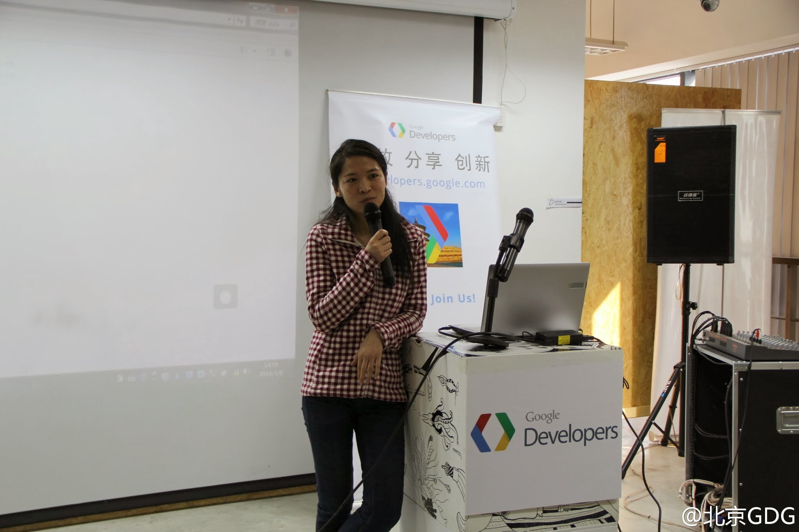
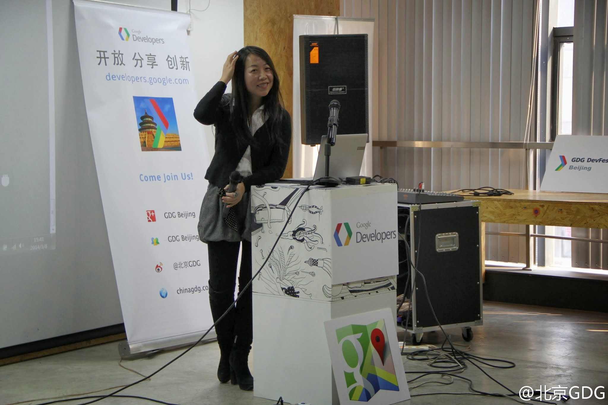

//@潘少宁_猎头_LAMP人:@苏菂 @车库咖啡 @Fenng @Laruence @Ada李力 @淘宝褚霸 @赵乐天 @fengyuncrawl @硅谷猎头TomZhang @v陈小光v @刘成城 @36氪 求扩散！@潘少宁_:#fighting#: 转行半年有余，微博今天正式更名为：@潘少宁_猎头_LAMP人 。前有新浪工程师转行卖水果，今有腾讯工程师转行 #猎头# 。 如果要#招人#，或者要#找工作#，或者要找创业的partner，都可以找我哈。最后，创业的童鞋如果需要投资（钱和资源），我可以帮忙介绍国内一线的顶尖投资人。
有个GDG志愿者说他有两个愿望，做一个伟大的程序员，做一个赛车手。我问了好几个问题：怎么定义伟大？被同时代人记住。/被人记住多久，10年，20年？……/需要被多少人记住？……/目前有几十万粉丝的某某，算有名，还是伟大？……。问到后来，我觉得自己不厚道，理想是需要鼓励的。
当时对这个问题也是说了两点：首先扔掉剩女这个标签，是你在做选择，而不是被动地等人挑；另外尽量与父母做物理上的隔离，如果衣食住行等还严重依赖父母，那他们干涉你的恋爱婚姻也很正常。@Ada李力:有女生问父母总催促她的恋爱婚姻，担心她成为“剩女”，她不想被催，也不想让父母不高兴。- 后来得知她还没毕业，我深深觉得之前给的回答太柔和了。那些以爱为名义的父母们，不少是在干着摧毁着孩子自信的事儿。
我28岁的时候还单着，母亲催过多次：要是你弟弟，30岁没结婚的话，我也不着急，但是你不行，再拖几年更找不到对象了。- 虽然是自己母亲的话，也还是感觉被侮辱了。@Ada李力:有女生问父母总催促她的恋爱婚姻，担心她成为“剩女”，她不想被催，也不想让父母不高兴。- 后来得知她还没毕业，我深深觉得之前给的回答太柔和了。那些以爱为名义的父母们，不少是在干着摧毁着孩子自信的事儿。
回复@剑川道长: //@剑川道长:伟大不是别人怎么对你，而是你怎么对别人。也就是说，有多少人记住你不能代表你为不伟大，而你为大众做过什么才是伟大与否的判别式@Ada李力:有个GDG志愿者说他有两个愿望，做一个伟大的程序员，做一个赛车手。我问了好几个问题：怎么定义伟大？被同时代人记住。/被人记住多久，10年，20年？……/需要被多少人记住？……/目前有几十万粉丝的某某，算有名，还是伟大？……。问到后来，我觉得自己不厚道，理想是需要鼓励的。
回复@面包师猪立业: //@面包师猪立业:从父母的角度来讲，他们是真心的为女儿好。社会定义如此，指望原本就已经全面认同这种社会意志的父亲母亲去对抗社会意志吗？无论如何被外界归于圣女的人群，是当前女性中的少数，无论何时何地，要做少数都必须比多数有更强大的内心。@Ada李力:有女生问父母总催促她的恋爱婚姻，担心她成为“剩女”，她不想被催，也不想让父母不高兴。- 后来得知她还没毕业，我深深觉得之前给的回答太柔和了。那些以爱为名义的父母们，不少是在干着摧毁着孩子自信的事儿。
//@GEEK枚苏发:看综艺最爱问梦想，要往下多追问两个问题就会发现很多人并不明白自己“真的”想要什么，只在要对别人的模仿、众人的期待，甚至一场赌气。但是一个随口的念头和一个可以在心里和现实中燃烧的火种根本不是一回事，产生的动力也有根本的不同。人皆爱做梦，对梦一杆子捅到底的追问残酷可怕@Ada李力:有个GDG志愿者说他有两个愿望，做一个伟大的程序员，做一个赛车手。我问了好几个问题：怎么定义伟大？被同时代人记住。/被人记住多久，10年，20年？……/需要被多少人记住？……/目前有几十万粉丝的某某，算有名，还是伟大？……。问到后来，我觉得自己不厚道，理想是需要鼓励的。
//@颜浩003:知易行难，但我们至少该有这种意识。尤其是自己要警醒，不要成为父母后也向下一代转移爱的枷锁。如鲁迅先生所言：“从我们起，解放了后来的人。” //@李好多:好难。 //@颜浩003:物理隔离是初步，更重要的还是心理隔离，明确父母的愿望不应左右你的选择，摆脱负罪感，给自己真正的自由。@Ada李力:有女生问父母总催促她的恋爱婚姻，担心她成为“剩女”，她不想被催，也不想让父母不高兴。- 后来得知她还没毕业，我深深觉得之前给的回答太柔和了。那些以爱为名义的父母们，不少是在干着摧毁着孩子自信的事儿。
转发微博@北京GDG:昨天的活动照片：依次是全场合影，主持人 @音速_越减越肥的胖子 ，冯利美老师， @Ada李力 ， @Aki_konata ，@Cass-UAMyLife_程慕 。更多现场已在 G+ 上分享 网页链接 。感谢大家为女性开发者带来的榜样的力量！ 